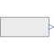

RealExpressionSet output signal to a time varying Real expression |

|
Information
This information is part of the Modelica Standard Library maintained by the Modelica Association.
The (time varying) Real output signal of this block can be defined in its parameter menu via variable y. The purpose is to support the easy definition of Real expressions in a block diagram. For example, in the y-menu the definition "if time < 1 then 0 else 1" can be given in order to define that the output signal is one, if time ≥ 1 and otherwise it is zero. Note, that "time" is a built-in variable that is always accessible and represents the "model time" and that variable y is both a variable and a connector.
Connectors (1)
| y |
Type: RealOutput Description: Value of Real output |
|---|
Used in Examples (5)
|
Modelica.StateGraph.Examples Example to demonstrate parallel and alternative execution paths |
|
|
Modelica.Electrical.MultiPhase.Examples |
|
|
Modelica.Electrical.QuasiStationary.MultiPhase.Examples |
|
|
ThreePhaseTransformerWithRectifier Modelica.Magnetic.FluxTubes.Examples.Hysteresis 3 Phase transformer (including hysteresis effect) with rectifier |
|
|
Modelica.Fluid.Examples.ControlledTankSystem Demonstrating the controller of a tank filling/emptying system |
Used in Components (3)
|
Modelica.Blocks.Examples.BusUsage_Utilities Component with sub-control bus |
|
|
Modelica.Electrical.Analog.Examples.Utilities Switched capacitor which can represent a positive or negative resistance |
|
|
Modelica.Electrical.Machines.Utilities Voltage controller |